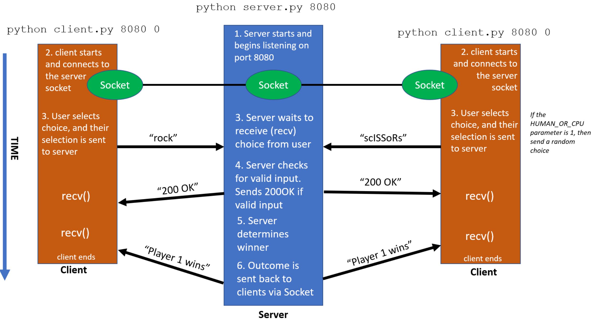
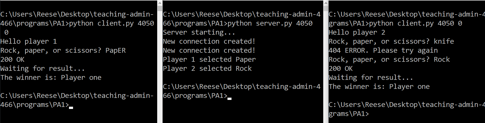

Programming Assignment 1: Rock, Paper, Scissors with Sockets
Assigned Wednesday September 14th
Due Monday September 26th @11:59 PM
Overview
In this assignment, you will gain experience using sockets to write network applications. You will develop a client-server application that simulates the game rock, paper, scissors.
GitHub Repo Setup
You will need to setup a private github repository for all your files. You will have one GitHub repository for all assignments in this course, with each assignment getting its own specific folder.
Visit
https://github.com/new to create a new repository. You should name your repository
[last_name]-[first_name]-csci466. Make sure that you set your repository to be private.
If we find that your repository is public, you will receive an automatic ZERO.
After creating your repository, go into the "settings" tab, and then click the "collaborators" tab. You will need to add both Reese and Justin as collaborators on the repository.
- Reese's GitHub username: @reesep
- Justin's GitHub username: @jdmau72
If we do not have access to your repository, then we will be unable to grade your submission and you will recieve a zero.
Instructions
For this assignment, you will develop two programs:
client.py and
server.py .
client.py
The "client" will represent a player in the rock paper scissors game. This program is run via the command line and takes 2 command line parameters:
python client.py [PORT_NUMBER] [HUMAN_OR_CPU]
example: python client.py 5001 0 //port 5001, 0 = human playing
The
PORT_NUMBER argument is the port that the socket will bind to. Remember that you should only use ports greater than 1024.
The [HUMAN_OR_CPU] parameter will be either 0 or 1. If the value is 0, that means that a human is playing, and so the user will supply their choice as user input. If the value is 1, that means a CPU is playing. The CPU will make a random choice between rock, paper, or scissors. The client's choice will be sent to the server via a socket.
server.py
This file will be your server. The server is provided a port number via command line input, and will begin to listen on that port for a socket connection
python server.py [PORT_NUMBER]
The server should accept messages from both of the clients. Once the server receives the player's choice, the server determines who the winner is and sends the outcome to both of the clients. If the server recieves something that is not "Rock" "Paper" or "Scissors" (not case-sensitive), the server should send a "404 Not Found" message and then ask again for the player's choice. If the clients provide a valid answer, the server to respond with a "200 OK" response message.

Expected Output

Video Demo
You will record a video demo that highlights the functionality of your program. You can do this with Panopto, or you can record with another recording software (such as OBS) and post it to youtube as private or unlisted.
The video should show you running
server.py and two instances of the
client.py program. You should run the programs with a player vs player scenario, and then a player vs CPU scenario. If you do not record a video demo, then you will lose
a very large amount of points.
Submission Instructions
All your files need to be pushed to a
/PA1 folder in your
[last_name]-[first_name]-csci466 repository. You need to include a
README.md in your
/PA1 folder. The link to your video demo should appear at the very top of your README. Additionally, your README should have a section that describes how to run your program(s). When you are ready to submit, you will submit
just the link to your private
[last_name]-[first_name]-csci466 repository.
Partners
You are allowed to work with 1 (one) partner. If you work with a partner, you should only create one private repository. When you are ready to submit to D2L, only one group member needs to submit the link to the repo. Make sure you clearly mention in your README/Video/Submission who the group members are.
Grading Rubric (100 Points)
| Requirement |
Points |
| server.py and client.py are invoked from the command line with the correct parameters |
5 |
| Client and server communicate using sockets |
20 |
| Your program allows for a user to play against another user (HUMAN_OR_CPU = 0) and a CPU (HUMAN_OR_CPU = 1). |
15 |
| CPUs make a random choice between rock, paper, scissors |
5 |
| Server checks sends a "404 Error" message and requests a new input when the client sends an invalid input |
10 |
| Server sends a "200 OK" message when a valid input is received (upper case, lower case, and mixed case) |
5 |
| Server determines the winner properly |
5 |
| Clients wait for server to determine winner |
5 |
| The winner message is sent back to both clients |
5 |
| The server keeps track of which player is which (Player 1 or player 2) |
10 |
| Your code is submitted to a private GitHub repository |
5 |
| Your README contains a link to your video demo and describes how to run your program |
10 |
Penalties
- Running code results in errors before runtime: -30 points
- Running code results in errors during runtime: -15 points
- No video demo: -50 points
- Your repository is public: -100 points
- You say mean things about Python or Reese in comments: expulsion
Helpful Examples
Solution